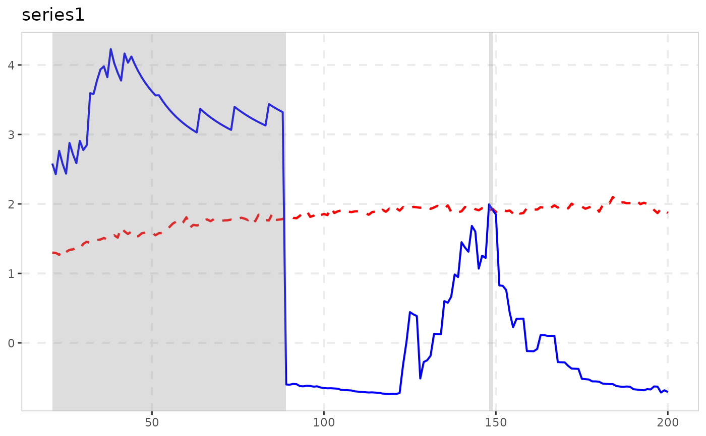

Time-Transformed Test for Explosive Bubbles under Non-stationary Volatility
Source:R/radf_tt.R
radf_tt.Rdradf_tt computes the STADF/GSTADF test statistics of Kurozumi,
Skrobotov & Tsarev, a heteroskedasticity-robust alternative to
radf that requires no bootstrap: the series is time-deformed
using a nonparametric estimate of its variance profile, after which the
usual (asymptotic, homoskedastic) recursive sup-ADF critical values apply.
Usage
radf_tt(data, minw = NULL, kernel = c("uniform", "gaussian"), h = NULL)Arguments
- data
A univariate or multivariate numeric time series object, a numeric vector or matrix, or a data.frame. A column may have leading and/or trailing
NAvalues (an uneven/unbalanced panel where series enter or exit the sample at different times) – those periods are filled withNAinbadf/bsadfand excluded from that series'adf/sadf/gsadf. InteriorNAvalues (a gap in the middle of a series) are not supported. When any series is padded this way, the panel statistic (bsadf_panel/gsadf_panel) is not available and is returned asNA, with a warning.- minw
A positive integer. The minimum window size (default = \((0.01 + 1.8/\sqrt{T})T\), where T denotes the sample size).
- kernel
Kernel used in the local variance-profile regression,
"uniform"(default, as in the paper's simulations) or"gaussian".- h
Bandwidth for the variance-profile kernel regression. Default
T^(-2/5), the midpoint (on the log scale) of the paper's cross-validation search range \([T^{-0.5}, T^{-0.3}]\).
Value
An object of class radf_tt_obj/radf_obj: the same
adf/badf/sadf/bsadf/gsadf list as
radf, computed on the time-transformed series, so it
plugs into summary()/datestamp()/tidy()/autoplot()
paired with radf_tt_cv.
Details
For critical values, use radf_tt_cv as the primary
recommendation: it is pivotal (asymptotically free of the volatility
process), so it does not need to be recomputed per dataset, unlike a
bootstrap. radf_wb_cv (Harvey, Leybourne, Sollis & Taylor's
wild bootstrap) is a bootstrap-based alternative, worth considering if
non-pivotality/finite-sample bootstrap robustness is a specific concern.
Note
Carries the radf_obj class and, as of 2026-08-18, its full
summary()/datestamp/tidy/autoplot
pipeline works – radf_tt_cv() now computes the time-varying
badf_cv/bsadf_cv boundary those last two need, not just
the three scalar critical values summary() uses. See
vignette("naming-and-analysis", package = "exuber").
![[Experimental]](figures/lifecycle-experimental.svg)
References
Kurozumi, E., Skrobotov, A., & Tsarev, A. (2024). Time-Transformed Test for Bubbles under Non-stationary Volatility. Journal of Financial Econometrics. doi:10.1093/jjfinec/nbae026
See also
radf_tt_cv for the (pivotal, bootstrap-free)
asymptotic critical values, and radf_wb_cv for the
bootstrap-based alternative (Harvey, Leybourne, Sollis & Taylor).
Other volatility-robust tests:
radf_kp(),
radf_sbz(),
radf_sbz_union(),
radf_sign(),
radf_sign_dm(),
ssu_test()
Examples
# \donttest{
# Volatility triples half-way through the sample: the non-stationary-volatility
# case this test is built for (plain radf() over-rejects here)
y <- sim_psy1(n = 200, seed = 1, e = sim_vol_break(199))
res <- radf_tt(y, minw = 20)
print(res)
#>
#> ── radf_tt (minw = 20, kernel = uniform) ───────────────────────────────────────
#>
#> series adf sadf gsadf
#> series1 -0.9972 3.275 4.229
#>
cv <- radf_tt_cv(n = 200, minw = 20)
summary(res, cv = cv)
#>
#> ── Summary (minw = 20, lag = 0) ────────── Time-Transformed MC (nboot = 2000) ──
#>
#> series1 :
#> # A tibble: 3 × 5
#> stat tstat `90` `95` `99`
#> <fct> <dbl> <dbl> <dbl> <dbl>
#> 1 adf -0.997 0.833 1.21 1.97
#> 2 sadf 3.27 2.31 2.65 3.35
#> 3 gsadf 4.23 3.27 3.65 4.42
#>
tidy(res, cv = cv)
#> # A tibble: 1 × 4
#> id adf sadf gsadf
#> <fct> <dbl> <dbl> <dbl>
#> 1 series1 -0.997 3.27 4.23
datestamp(res, cv = cv)
#>
#> ── Datestamp (min_duration = 0) ───────────────────────── Time-Transformed MC ──
#>
#> series1 :
#> Start Peak End Duration Signal Ongoing
#> 1 21 38 89 68 negative FALSE
#> 2 148 148 149 1 positive FALSE
#>
autoplot(res, cv = cv)

# }